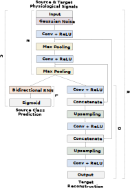

Model Adaptation
Unsupervised Domain Adaptation. We formulate model adaptation as a cross-domain and cross-user transfer learning problem. Here, a model trained on a dataset collected in a specific setting (simulator) or source domain has to be adapted to perform the same task in a different situation (real-world) or target domain. There are several challenges for learning an optimal model in this case, such as unavailability of ground-truth for the target domain, expensive process of acquiring a large number of labels and dynamic shift in data distribution. Therefore, target data cannot be directly used for fine-tuning an existing model in a supervised manner. In this work, we utilize deep reconstruction and classification network for unsupervised domain adaptation to learn from source and target datasets jointly. This learning setting resembles MTL in the sense that learning an auxiliary task can help improve performance for the actual task through a shared representation. For more information see section II.B of [1].
Results
Personalization (Subjects as Tasks)


Multi-task Learning for Personalization. A subject-independent global model for stress detection may perform poorly due to large interpersonal variations in physiological responses, e.g. due to age, gender, sleep, and diet. In order to take these disparities into account, we personalize a model by applying deep MTL with the subjects-as-tasks approach. MTL involves finding a unified model for solving more than one task with a shared representation. In this work, we develop two model architectures for the MTL setting, one based on the temporal convolutional neural network for end-to-end representation learning and second a feed-forward neural network trained with manually extracted features from heart rate and skin conductance.